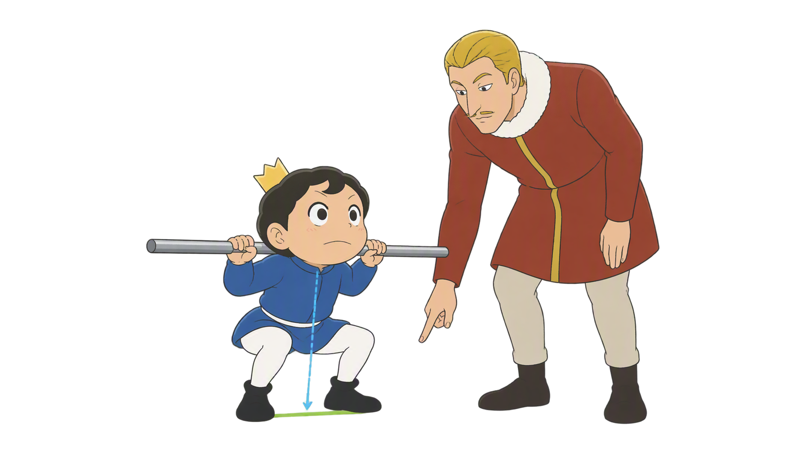
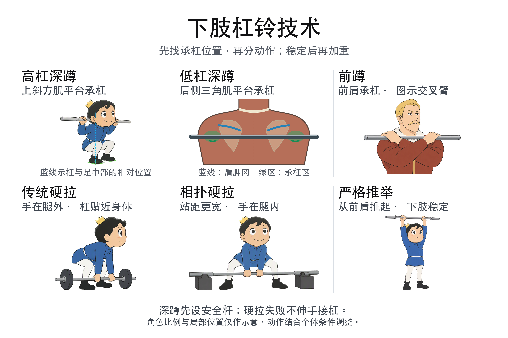
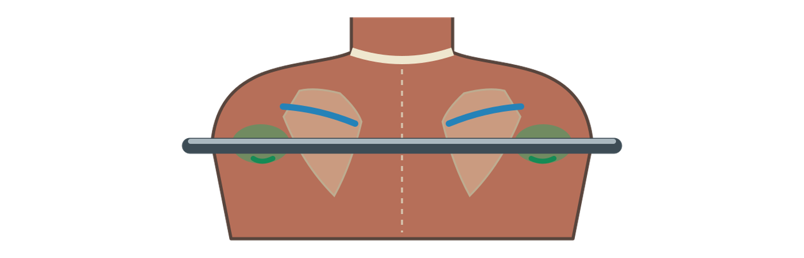
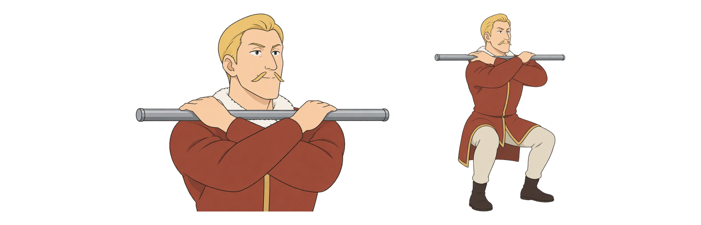
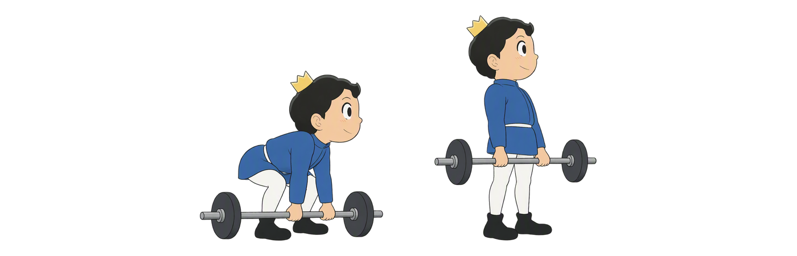
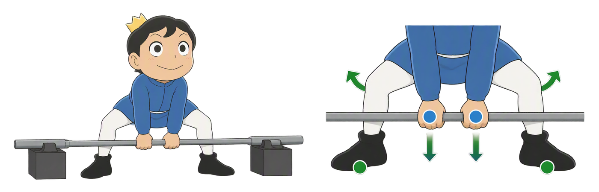
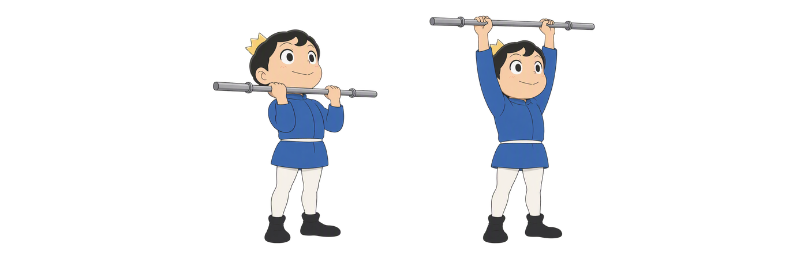
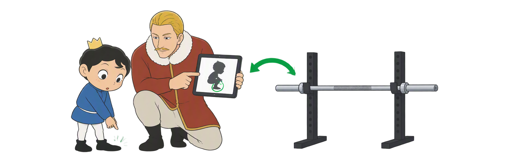
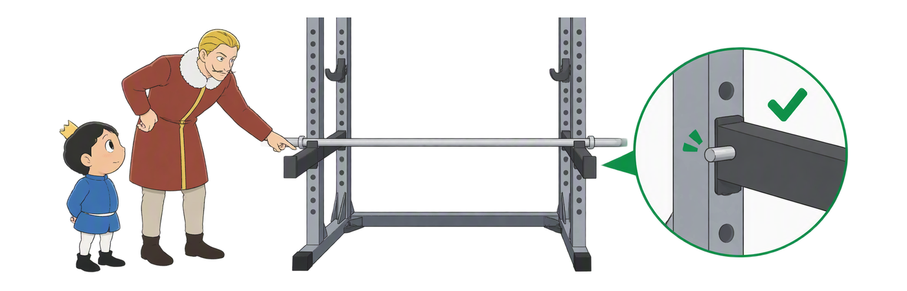
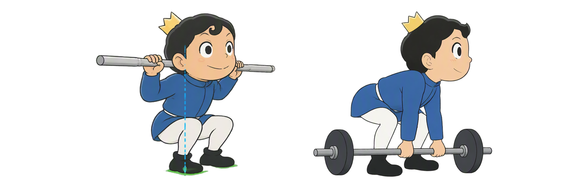

Day 41
下肢杠铃技术
NSCA · 三种深蹲、两种硬拉与安全保护
第7周 · 训练科学杠铃技术先学稳，再加重

NSCA · 三种深蹲、两种硬拉与安全保护
三种深蹲看承杠位置，两种硬拉看站距与握法；严格推举练全身支撑，安全保护在加重前安排好。

杠在上斜方肌平台，髋膝协调屈伸；躯干角度要结合个人比例和活动能力。
蓝线示肩胛冈，绿色示其下方后肩承杠区；图只表达相对关系。低杠通常伴随更多髋后移与躯干前倾。

杠由前三角肌平台承托，手帮助稳定；图示采用交叉臂握法，关键是抬肘并保持前肩平台。

左为起始位，右为站直位；两端配重固定在杆套上，随杠一起移动。先设好髋位与张力，再推动地面。

站距与握法改变关节需求；是否适合自己，要看稳定、舒适和训练目标。

左图从前肩起始，右图完成过顶推举；杠不放在颈后。下肢稳住，严格推举不蹬腿借力。

看到偏差，先找可以调整的原因；一句口令不能替代合适负荷与动作条件。

深蹲先设安全杆并按需配受训保护者；硬拉通常不做人工接杠保护。

左为深蹲底部，蓝虚线示杠与足中部的相对位置；右为传统硬拉准备位。对照杠位、髋位和手的位置。
